Menus

Wombo Combo
Voir le menu
SegFault Rush / (Core dumped)
Voir le menuSweet BlueStacks
Voir le menu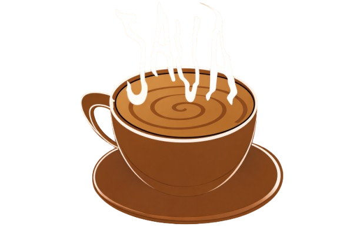

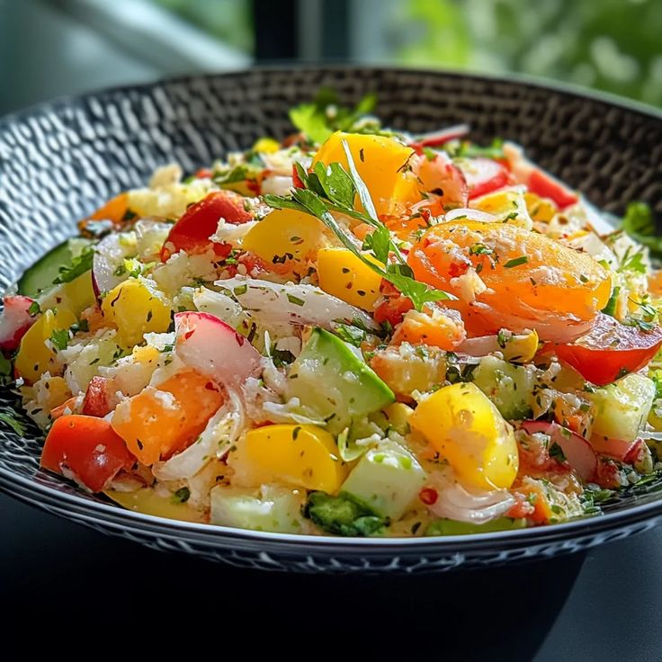
Version Nature Stable 1.0 — 100% Offline
blablahblah
Version Dockerisée 2.3 - Hot Deploy Edition
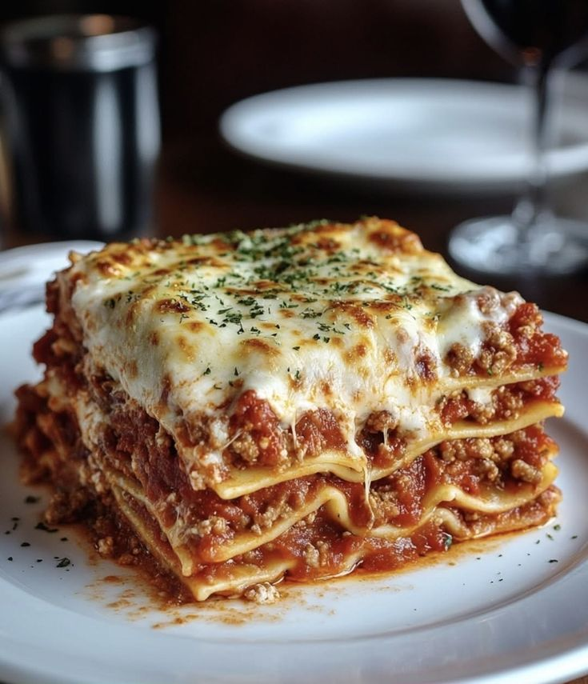
Version Beta-1.0 — Layered Deployment

Version Passive 1.4 — Background Process
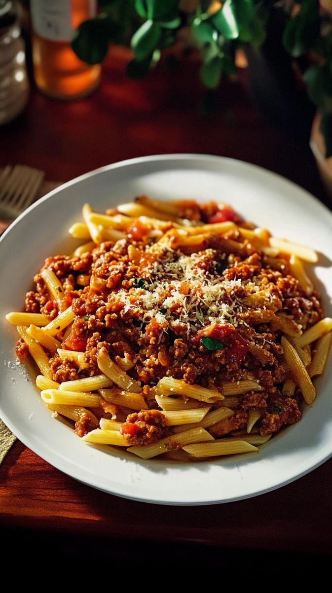
Version 3.2 — Async Flavor

Version 1.1 — True/False Edition
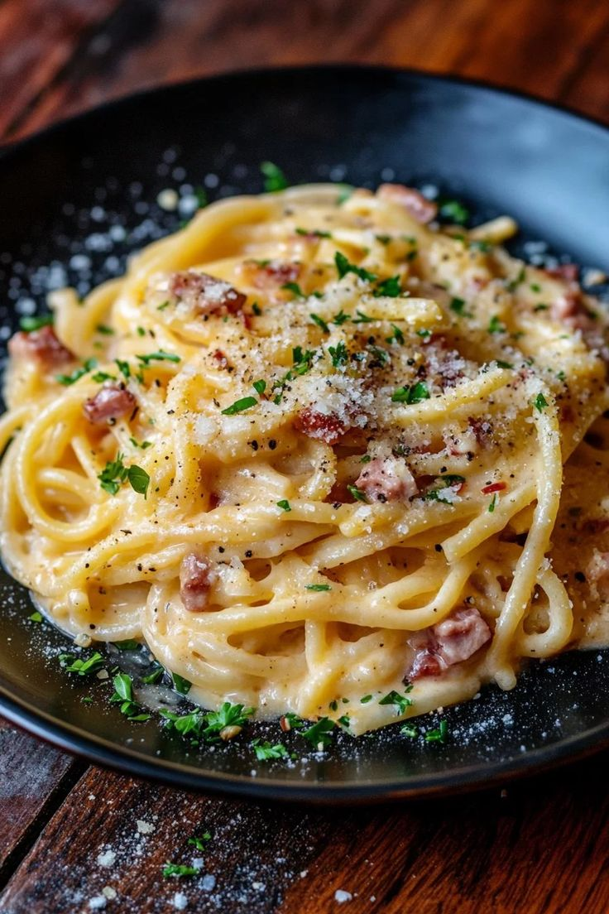
Version 2.0 — Creamy Response
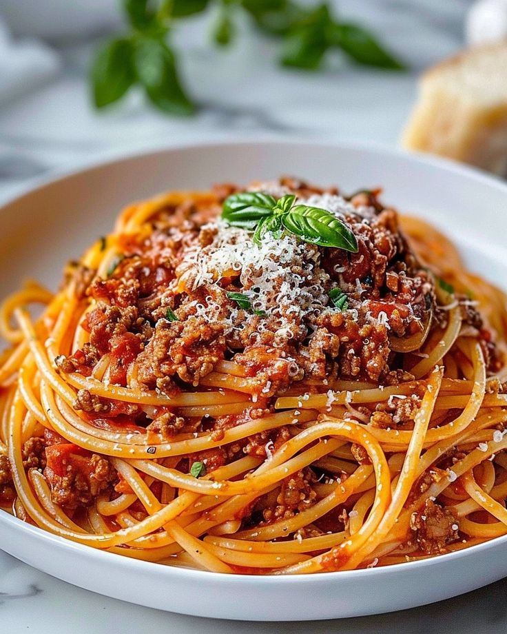
Version Legacy 0.9 — Chaos Edition
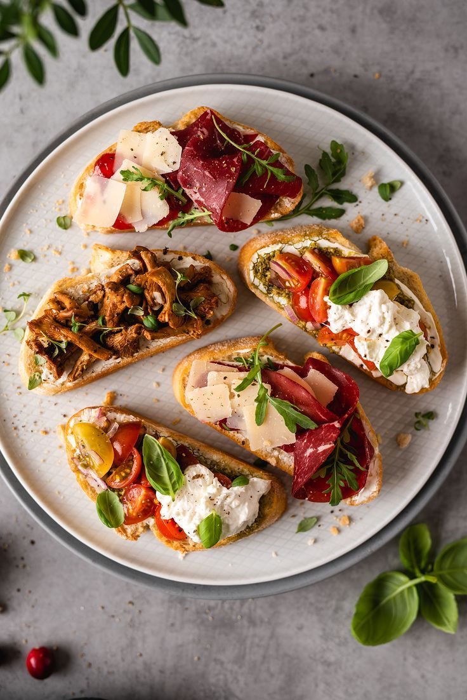
Version 1.0 — Crunchy Edition
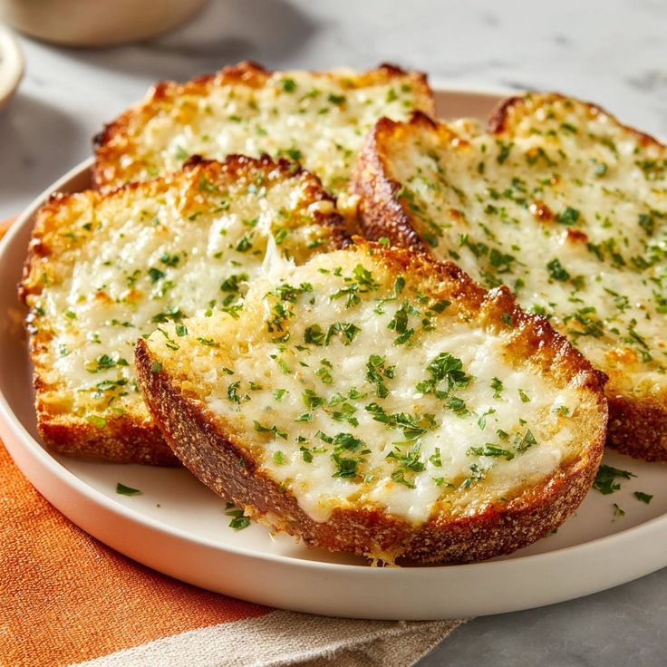
Version 2.1 — Hot Deploy
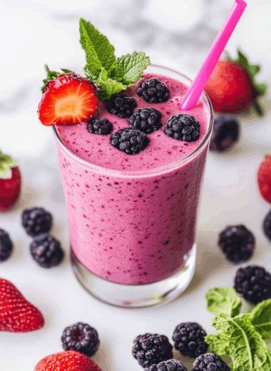
Version 1.2 — Fruity Endpoint
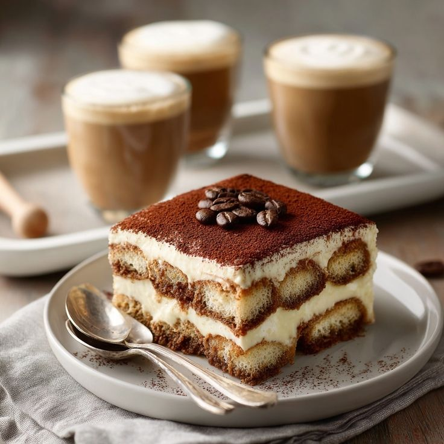
Version 1.0 — Layered Flavor
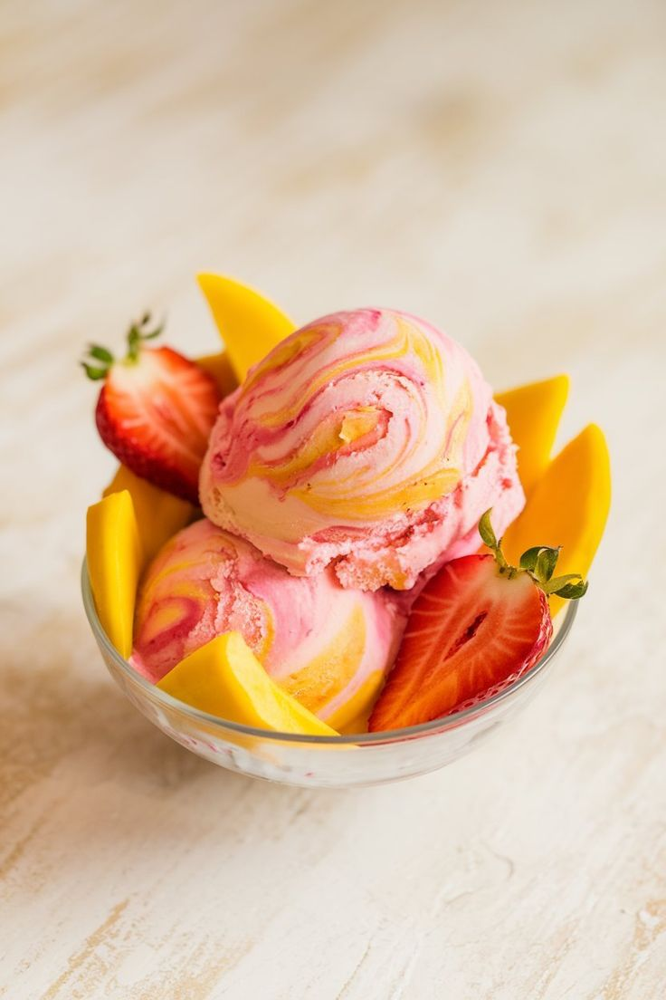
Version 2.2 — Async Freeze
Version 3.0 — Error Handling Edition
Version 2.5 — Continuous Brew

Version 1.9 — Fatal Shot Edition